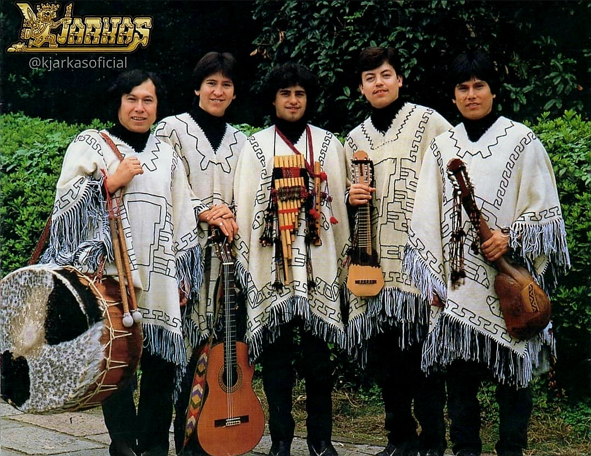

50 AÑOS DE TRAYECTORIA!!!
A lo largo de este medio siglo, Los Kjarkas han dado la vuelta al mundo con la música boliviana como bandera y su característica vestimenta, una “marca” que va más allá de lo estético y se ha convertido en un símbolo de la cultura y música bolivianas.